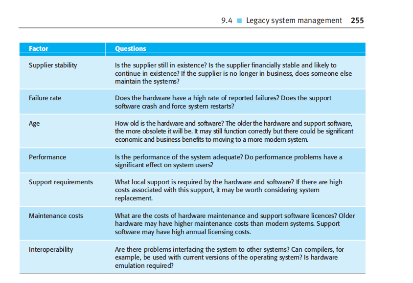
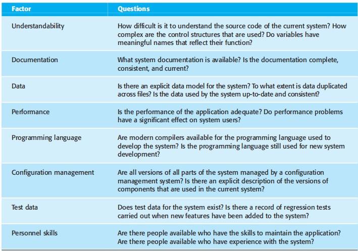

<!DOCTYPE html>
<html lang="en">
  <head>
    <meta charset="UTF-8" />
    <meta name="viewport" content="width=device-width, initial-scale=1.0" />
    <title>9.4 Legacy system management</title>
    <!-- Tailwind output.css -->
    <link href="src/output.css" rel="stylesheet" />
  </head>
   <body>
<body class="bg-gray-50">
    <nav class="bg-gray-900 fixed w-full top-0 left-0 z-50">
      <div class="max-w-7xl mx-auto px-4 sm:px-6 lg:px-8">
        <div class="flex justify-between items-center h-16">
          <!-- Logo -->
          <a href="home.html" class="text-2xl font-bold text-white">
            Software Evolution
          </a>

          <!-- Hamburger button (only visible on small screens) -->
          <div class="md:hidden">
            <input type="checkbox" id="menu-toggle" class="hidden peer" />
            <label
              for="menu-toggle"
              class="flex flex-col justify-between w-6 h-5 cursor-pointer"
            >
              <span
                class="block w-full h-0.5 bg-white transform transition duration-300 origin-center peer-checked:rotate-45 peer-checked:translate-y-2"
              ></span>
              <span
                class="block w-full h-0.5 bg-white transition duration-300 opacity-100 peer-checked:opacity-0"
              ></span>
              <span
                class="block w-full h-0.5 bg-white transform transition duration-300 origin-center peer-checked:-rotate-45 peer-checked:-translate-y-2"
              ></span>
            </label>

            <!-- Dropdown menu -->
            <ul
              class="absolute left-0 top-16 w-full bg-gray-900 flex flex-col items-center space-y-4 py-4 opacity-0 invisible peer-checked:opacity-100 peer-checked:visible transition-all duration-300"
            >
              <li>
                <a href="home.html" class="text-white hover:text-blue-300"
                  >Home</a
                >
              </li>
              <li>
                <a href="9.1.html" class="text-white hover:text-blue-300"
                  >Processes</a
                >
              </li>
              <li>
                <a href="9.2 index.html" class="text-white hover:text-blue-300"
                  >Program Dynamics</a
                >
              </li>
              <li>
                <a href="lawrence.html" class="text-white hover:text-blue-300"
                  >Software Maintenance</a
                >
              </li>
              <li>
                <a href="index.html" class="text-white hover:text-blue-300"
                  >Legacy System Management</a
                >
              </li>
            </ul>
          </div>

          <!-- Desktop menu -->
          <ul class="hidden md:flex space-x-8 text-base font-semibold">
            <li>
              <a href="home.html" class="text-white hover:text-blue-300"
                >Home</a
              >
            </li>
            <li>
              <a href="9.1.html" class="text-white hover:text-blue-300"
                >Processes</a
              >
            </li>
            <li>
              <a href="9.2 index.html" class="text-white hover:text-blue-300"
                >Program Dynamics</a
              >
            </li>
            <li>
              <a href="lawrence.html" class="text-white hover:text-blue-300"
                >Software Maintenance</a
              >
            </li>
            <li>
              <a href="index.html" class="text-white hover:text-blue-300"
                >Legacy System Management</a
              >
            </li>
          </ul>
        </div>
      </div>
    </nav>
    

  <!-- Main Content -->
<main class="main-content">
      <header class="mb-10 text-center">
        <h1 class="text-4xl mb-2">Chapter 9 Software evolution</h1>
        <p class="text-muted">
          Chapter 9. Updated October 2025
        </p>
        <p class="text-muted">
          Written By: <span class="author-name">Catherine Riosa</span>
        </p>
        
      </header>

      <body>
         <section class="cath">
          <div class="progress-bar"></div>
           <div class="content">
    <p>
      For new software systems developed using modern software engineering
      processes, such as incremental development and CBSE, it is possible to
      plan how to integrate system development and evolution. More and more
      companies are starting to understand that the system development process
      is a whole life-cycle process and that an artificial separation between
      software development and software maintenance is unhelpful. However, there
      are still many legacy systems that are critical business systems. These
      have to be extended and adapted to changing e-business practices. Most
      organizations usually have a portfolio of legacy systems that they use,
      with a limited budget for maintaining and upgrading these systems. They
      have to decide how to get the best return on their investment. This
      involves making a realistic assessment of their legacy systems and then
      deciding on the most appropriate strategy for evolving these systems.
      There are four strategic options:
    </p>

   
     
        <p>
          1. Scrap the system completely This option should be chosen when the
          system is not making an effective contribution to business processes.
          This commonly occurs when business processes have changed since the
          system was installed and are no longer reliant on the legacy system.
        </p>

        <p>
          2. Leave the system unchanged and continue with regular maintenance
          This option should be chosen when the system is still required but is
          fairly stable and the system users make relatively few change
          requests.
        </p>

        <p>
          3. Reengineer the system to improve its maintainability This option
          should be chosen when the system quality has been degraded by change
          and where a new change to the system is still being proposed. This
          process may include developing new interface components so that the
          original system can work with other, newer systems
        </p>

        <p>
          4. Replace all or part of the system with a new system This option
          should be chosen when factors, such as new hardware, mean that the old
          system cannot continue in operation or where off-the-shelf systems
          would allow the new system to be developed at a reasonable cost. In
          many cases, an evolutionary replacement strategy can be adopted in
          which major system components are replaced by offthe-shelf systems
          with other components reused wherever possible.
        </p>

        <div></div>

        <p>
          Naturally, these options are not exclusive. When a system is composed
          of several programs, different options may be applied to each program.
          When you are assessing a legacy system, you have to look at it from a
          business perspective and a technical perspective (Warren, 1998). From
          a business perspective, you have to decide whether or not the business
          really needs the system. From a technical perspective, you have to
          assess the quality of the application software and the system’s
          support software and hardware. You then use a combination of the
          business value and the system quality to inform your decision on what
          to do with the legacy system.
        </p>

        <p>
          For example, assume that an organization has 10 legacy systems. You
          should assess the quality and the business value of each of these
          systems. You may then create a chart showing relative business value
          and system quality. This is shown in
        </p>
        Figure 9.13.
        <p>
          From Figure 9.13, you can see that there are four clusters of systems:
        </p>

        <p>
          1. Low quality, low business value Keeping these systems in operation
          will be expensive and the rate of the return to the business will be
          fairly small. These systems should be scrapped.
        </p>

        <p>
          2. Low quality, high business value These systems are making an
          important business contribution so they cannot be scrapped. However,
          their low quality means that it is expensive to maintain them. These
          systems should be reengineered to improve their quality. They may be
          replaced, if a suitable off-the-shelf system is available.
        </p>

        <p>
          3. High quality, low business value These are systems that don’t
          contribute much to the business but which may not be very expensive to
          maintain. It is not worth replacing these systems so normal system
          maintenance may be continued if expensive changes are not required and
          the system hardware remains in use. If expensive changes become
          necessary, the software should be scrapped.
        </p>

        <p>
          4. High quality, high business value These systems have to be kept in
          operation. However, their high quality means that you don’t have to
          invest in transformation or system replacement. Normal system
          maintenance should be continued.
        </p>

        <p>
          To assess the business value of a system, you have to identify system
          stakeholders, such as end-users of the system and their managers, and
          ask a series of questions about the system. There are four basic
          issues that you have to discuss
        </p>

        <p>
          1. The use of the system If systems are only used occasionally or by a
          small number of people, they may have a low business value. A legacy
          system may have been developed to meet a business need that has either
          changed or that can now be met more effectively in other ways. You
          have to be careful, however, about occasional but important use of
          systems. For example, in a university, a student registration system
          may only be used at the beginning of each academic year. However, it
          is an essential system with a high business value.
        </p>

        <p>
          2. The business processes that are supported When a system is
          introduced, business processes are designed to exploit the system’s
          capabilities. If the system is inflexible, changing these business
          processes may be impossible. However, as the environment changes, the
          original business processes may become obsolete. Therefore, a system
          may have a low business value because it forces the use of inefficient
          business processes.
        </p>

        <p>
          3. The system dependability System dependability is not only a
          technical problem but also a business problem. If a system is not
          dependable and the problems directly affect the business customers or
          mean that people in the business are diverted from other tasks to
          solve these problems, the system has a low business value.
        </p>

        <p>
          4. The system outputs The key issue here is the importance of the
          system outputs to the successful functioning of the business. If the
          business depends on these outputs, then the system has a high business
          value. Conversely, if these outputs can be easily generated in some
          other way or if the system produces outputs that are rarely used, then
          its business value may be low.
        </p>

        <p>
          For example, let’s assume that a company provides a travel ordering
          system that is used by staff responsible for arranging travel. They
          can place orders with an approved travel agent. Tickets are then
          delivered and the company is invoiced for these. However, a business
          value assessment may reveal that this system is only used for a fairly
          small percentage of travel orders placed. People making travel
          arrangements find it cheaper and more convenient to deal directly with
          travel suppliers through their websites. This system may still be
          used, but there is no real point in keeping it. The same functionality
          is available from external systems
        </p>
        <p>
          Conversely, say a company has developed a system that keeps track of
          all previous customer orders and automatically generates reminders for
          customers to reorder goods. This results in a large number of repeat
          orders and keeps customers satisfied
        </p>

        <div></div>
        <h4><b>Figure 9.14 Factors used in environment assessment</b></h4>

        <p>
          Because they feel that their supplier is aware of their needs. The
          outputs from such a system are very important to the business and this
          system therefore has a high business value.
        </p>
        <p>
          To assess a software system from a technical perspective, you need to
          consider both the application system itself and the environment in
          which the system operates. The environment includes the hardware and
          all associated support software (compilers, development environments,
          etc.) that are required to maintain the system. The environment is
          important because many system changes result from changes to the
          environment, such as upgrades to the hardware or operating system.
        </p>
        <p>
          If possible, in the process of environmental assessment, you should
          make measurements of the system and its maintenance processes.
          Examples of data that may be useful include the costs of maintaining
          the system hardware and support software, the number of hardware
          faults that occur over some time period and the frequency of patches
          and fixes applied to the system support software.
        </p>
        <p>
          Factors that you should consider during the environment assessment are
          shown in Figure 9.14. Notice that these are not all technical
          characteristics of the environment. You also have to consider the
          reliability of the suppliers of the hardware and support software. If
          these suppliers are no longer in business, there may not be support
          for their systems.
        </p>
        <p>
          To assess the technical quality of an application system, you have to
          assess a range of factors (Figure 9.15) that are primarily related to
          the system dependability
        </p>

        <center></center>
        <h4><b>Figure 9.15 Factors used in application assessment</b></h4>

        <p>
          the difficulties of maintaining the system and the system
          documentation. You may also collect data that will help you judge the
          quality of the system. Data that may be useful in quality assessment
          are:
        </p>
        <ul>
          <p>
            1. The number of system change requests System changes usually
            corrupt the system structure and make further changes more
            difficult. The higher this accumulated value, the lower the quality
            of the system.
          </p>

          <p>
            2. The number of user interfaces This is an important factor in
            forms-based systems where each form can be considered as a separate
            user interface. The more interfaces, the more likely that there will
            be inconsistencies and redundancies in these interfaces.
          </p>

          <p>
            3. The volume of data used by the system The higher the volume of
            data (number of files, size of database, etc.), the more likely that
            it is that there will be data inconsistencies that reduce the system
            quality.
          </p>
        </ul>

        <p>
          Ideally, objective assessment should be used to inform decisions about
          what to do with a legacy system. However, in many cases, decisions are
          not really objective but are based on organizational or political
          considerations. For example, if two businesses merge, the most
          politically powerful partner will usually keep its systems and scrap
          the other systems. If senior management in an organization decide to
          move to a new hardware platform, then this may require applications to
          be replaced. If there is no budget available for system transformation
          in a particular year, then system maintenance may be continued, even
          though this will result in higher long-term costs.
        </p>
     
    <h3>KEY POINTS</h3>
    <ul class="list-disc ml-6">
      <li>
        Software development and evolution can be thought of as an integrated,
        iterative process that can be represented using a spiral model.
      </li>
      <li>
        For custom systems, the costs of software maintenance usually exceed the
        software development costs
      </li>
      <li>
        The process of software evolution is driven by requests for changes and
        includes change impact analysis, release planning, and change
        implementation.
      </li>
      <li>
        Lehman’s laws, such as the notion that change is continuous, describe a
        number of insights derived from long-term studies of system evolution.
      </li>
      <li>
        There are three types of software maintenance, namely bug fixing,
        modifying the software to work in a new environment, and implementing
        new or changed requirements
      </li>
      <li>
        Software reengineering is concerned with restructuring and redocumenting
        software to make it easier to understand and change.
      </li>
      <li>
        Refactoring, making small program changes that preserve functionality,
        can be thought of as preventative maintenance.
      </li>
      <li>
        The business value of a legacy system and the quality of the application
        software and its environment should be assessed to determine whether the
        system should be replaced, transformed, or maintained.
      </li>
    </ul>

    <h3>FUTURE READING</h3>

    <p>
      Software Maintenance and Evolution: A Roadmap’. As well as discussing
      research challenges, this paper is a good, short overview of software
      maintenance and evolution by leading researchers in this area. The
      research problems that they identify have not yet been solved. (V. Rajlich
      and K.H. Bennett, Proc. 20th Int. Conf. on Software Engineering, IEEE
      Press, 2000.) http://doi.acm.org/10.1145/336512.336534.
    </p>

    <p>
      Modernizing Legacy Systems: Software Technologies, Engineering Processes,
      and Business Practices. This excellent book covers general issues of
      software maintenance and evolution as well as legacy system migration. The
      book is based on a large case study of the transformation of a COBOL
      system to a Java-based client-server system. (R. C. Seacord, D. Plakosh
      and G. A. Lewis, Addison-Wesley, 2003).
    </p>
    <p>
      Working Effectively with Legacy Code. Solid practical advice on the
      problems and difficulties of dealing with legacy systems. (M. Feathers,
      John Wiley & Sons, 2004.)
    </p>

    <h3>EXERCISES</h3>

    <ul>
      <p>
        <b>9.1.</b> Explain why a software system that is used in a real-world
        environment must change or become progressively less useful.
      </p>
      <p>
        <b>9.2.</b> Explain the rationale underlying Lehman’s laws. Under what
        circumstances might the laws break down?
      </p>
      <p>
        <b>9.3.</b> From Figure 9.4, you can see that impact analysis is an
        important subprocess in the software evolution process. Using a diagram,
        suggest what activities might be involved in change impact analysis.
      </p>
      <p>
        <b>9.4.</b>As a software project manager in a company that specializes
        in the development of software for the offshore oil industry, you have
        been given the task of discovering the factors that affect the
        maintainability of the systems developed by your company. Suggest how
        you might set up a program to analyze the maintenance process and
        discover appropriate maintainability metrics for your company
      </p>
      <p>
        <b>9.5.</b>Briefly describe the three main types of software
        maintenance. Why is it sometimes difficult to distinguish between them?
      </p>
      <p>
        <b>9.6.</b> What are the principal factors that affect the costs of
        system reengineering?
      </p>
      <p>
        <b>9.7.</b> Under what circumstances might an organization decide to
        scrap a system when the system assessment suggests that it is of high
        quality and of high business value.
      </p>
      <p>
        <b>9.8.</b>What are the strategic options for legacy system evolution?
        When would you normally replace all or part of a system rather than
        continue maintenance of the software?
      </p>
      <p>
        <b>9.8.</b>What are the strategic options for legacy system evolution?
        When would you normally replace all or part of a system rather than
        continue maintenance of the software?
      </p>
      <p>
        <b>9.9.</b> Explain why problems with support software might mean that
        an organization has to replace its legacy systems.
      </p>
      <p>
        <b>9.10.</b>. Do software engineers have a professional responsibility
        to produce code that can be maintained and changed even if this is not
        explicitly requested by their employer?
      </p>
    </ul>

    <footer>
      <h3 class="ref h3">REFERENCES</h3>
      <section>
        <article class="ref">
          <ul>
            <p>
              Arthur, L. J. (1988). Software Evolution. New York: John Wiley &
              Sons
            </p>
            <p>
              Banker, R. D., Datar, S. M., Kemerer, C. F. and Zweig, D.
              (1993).‘Software Complexity and Maintenance Costs’. Comm. ACM, 36
              (11), 81–94.
            </p>
            <p>
              Boehm, B. W., Abts, C., Brown, A. W., Chulani, S., Clark, B. K.,
              Horowitz, E., Madachy, R., Reifer, D. and Steece, B. (2000).
              Software Cost Estimation with COCOMO II. Upper Saddle River, NJ:
              Prentice Hall.
            </p>
            <p>
              Coleman, D., Ash, D., Lowther, B. and Oman, P. (1994). ‘Using
              Metrics to Evaluate Software System Maintainability’. IEEE
              Computer, 27 (8), 44–49
            </p>
            <p>
              Erlikh, L. (2000). ‘Leveraging legacy system dollars for
              E-business’. IT Professional, 2 (3), May/June 2000, 17–23.
            </p>
            <p>
              Fowler, M., Beck, K., Brant, J., Opdyke, W. and Roberts, D.
              (1999). Refactoring: Improving the Design of Existing Code.
              Boston: Addison-Wesley
            </p>
            <p>
              Guimaraes, T. (1983). ‘Managing Application Program Maintenance
              Expenditures’. Comm. ACM, 26 (10), 739–46.
            </p>
            <p>
              Hopkins, R. and Jenkins, K. (2008). Eating the IT Elephant: Moving
              from Greenfield Development to Brownfield. Boston: IBM Press.
            </p>
            <p>
              Kafura, D. and Reddy, G. R. (1987). ‘The use of software
              complexity metrics in software maintenance’. IEEE Trans. on
              Software Engineering, SE-13 (3), 335–43.
            </p>
            <p>
              Kerievsky, J. (2004). Refactoring to Patterns. Boston: Addison
              Wesley.
            </p>
            <p>
              Kozlov, D., Koskinen, J., Sakkinen, M. and Markkula, J. (2008).
              ‘Assessing maintainability change over multiple software
              releases’. J. of Software Maintenance and Evolution, 20 (1),
              31–58.
            </p>
            <p>
              Krogstie, J., Jahr, A. and Sjoberg, D. I. K. (2005). ‘A
              longitudinal study of development and maintenance in Norway:
              Report from the 2003 investigation’. Information and Software
              Technology, 48 (11), 993–1005.
            </p>
            <p>
              Lehman, M. M. (1996). ‘Laws of Software Evolution Revisited’.
              Proc. European Workshop on Software Process Technology (EWSPT’96),
              Springer-Verlag. 108–24
            </p>
            <p>
              Lehman, M. M. and Belady, L. (1985). Program Evolution: Processes
              of Software Change. London:Academic Press.
            </p>
            <p>
              Lehman, M. M., Perry, D. E. and Ramil, J. F. (1998). ‘On Evidence
              Supporting the FEAST Hypothesis and the Laws of Software
              Evolution’. Proc. Metrics ‘98, Bethesda. Maryland: IEEE Computer
              Society Press. 84–8.
            </p>
            <p>
              Lehman, M. M., Ramil, J. F. and Sandler, U. (2001). ‘An Approach
              to Modelling Long-term Growth Trends in Software Systems’. Proc.
              Int. Conf. on Software Maintenance, Florence, Italy: 219–28
            </p>
            <p>
              Lientz, B. P. and Swanson, E. B. (1980). Software Maintenance
              Management. Reading, Mass.: Addison-Wesley
            </p>
            <p>
              McCabe, T. J. (1976). ‘A complexity measure’. IEEE Trans. on
              Software Engineering., SE-2 (4), 308–20.
            </p>
            <p>
              Nosek, J. T. and Palvia, P. (1990). ‘Software maintenance
              management: changes in the last decade’. Software Maintenance:
              Research and Practice, 2 (3), 157–74
            </p>
            <p>
              Opdyke, W. F. and Johnson, R. E. (1990). ‘Refactoring: An Aid in
              Designing Application Frameworks and Evolving Object-Oriented
              Systems’. 1990 Symposium on Object-Oriented Programming
              Emphasizing Practical Applications (SOOPPA ‘90), Poughkeepsie, New
              York.
            </p>
            <p>
              Poole, C. and Huisman, J. W. (2001). ‘Using Extreme Programming in
              a Maintenance Environment’. IEEE Software, 18 (6), 42–50.
            </p>
            <p>
              Rajlich, V. T. and Bennett, K. H. (2000). ‘A Staged Model for the
              Software Life Cycle’. IEEE Computer, 33 (7), 66–71.
            </p>
            <p>
              Sousa, M. J. (1998). ‘A Survey on the Software Maintenance
              Process’. 14th IEEE International Conference on Software
              Maintenance (ICSM ’98), Washington, D.C.: 265–74.
            </p>
            <p>
              Ulrich, W. M. (1990). ‘The Evolutionary Growth of Software
              Reengineering and the Decade Ahead’. American Programmer, 3 (10),
              14–20.
            </p>
            <p>
              Warren, I. E. (1998). The Renaissance of Legacy Systems. London:
              Springer.
            </p>
          </ul>

          <h1 class="part2">Part 2 Dependability and Security</h1>
          <p>
            As software systems increase in size and complexity, We strongly
            believe that the most significant challenge that we face in software
            engineering is ensuring that we can trust these systems. To trust a
            system, we must have confidence that it will be available when
            required and perform as expected. It must be secure so that our
            computers or data are not threatened by it. This means that issues
            of system dependability and security are often more important than
            the details of system functionality. This part of the book has
            therefore been designed to introduce students and practising
            software engineers to the important topics of dependability and
            security.
          </p>
          <p>
            The first chapter in this section, Chapter 10, covers sociotechnical
            systems, which at first sight, may not appear to have much to do
            with software dependability. However, many security and
            dependability failures stem from human and organizational causes and
            we cannot ignore these when considering system dependability and
            security. Software engineers must be aware of this and should not
            imagine that better techniques and technology can ensure that our
            systems are completely dependable and secure.
          </p>
          <p>
            Chapter 11 introduces the basic concepts of dependability and
            security and explains the fundamental principles of avoidance,
            detection, and recovery that are used to build dependable systems.
            Chapter 12 supplements Chapter 4, which covers requirements
            engineering, with a discussion of specific approaches that are used
            for deriving and specifying system
          </p>

          <p>
            requirements for security and dependability. we briefly introduce
            the use of formal specification in Chapter 12, and an additional
            chapter on this topic is available on the Web.
          </p>
          <p>
            Chapters 13 and 14 are concerned with software engineering
            techniques for the development of dependable and secure systems. We
            cover dependability engineering and security engineering separately,
            but they have much in common. We discuss the importance of software
            architectures and present design guidelines and programming
            techniques that help achieve dependability and security. We also
            explain why it is important to use redundancy and diversity to
            ensure that systems can cope with failures and external attacks. We
            introduce the increasingly important topic of software survivability
            or resilience, which allows systems to continue to deliver essential
            services while their security is being threatened.
          </p>
          <p>
            Finally, in this section, Chapter 15 is concerned with dependability
            and security assurance. We explain the use of static analysis and
            model checking for system verification and fault detection. These
            techniques have been successfully used in critical systems
            engineering. We also cover specific approaches to testing the
            dependability and security of systems and explain why a
            dependability case may be necessary to convince an external
            regulator that a system is safe and secure.
          </p>
          <section>
        </article>
        </section>
      </div>
        </main>
        </body>

      
    </footer>

    <footer class="footer">
      <div class="footer-container">
        <p class="text-sm">
          &copy; 2025
          <span class="font-semibold text-white">Software Evolution</span>. All
          rights reserved.
        </p>
        <p class="text-sm mt-2 md:mt-0">
          Contact:
          <span class="text-blue-400">Gonzales</span>,
          <span class="text-blue-400">Riosa</span>,
          <span class="text-blue-400">Codizal</span>,
          <span class="text-blue-400">Villalobos</span>
        </p>
      </div>
 
</footer>
</html>